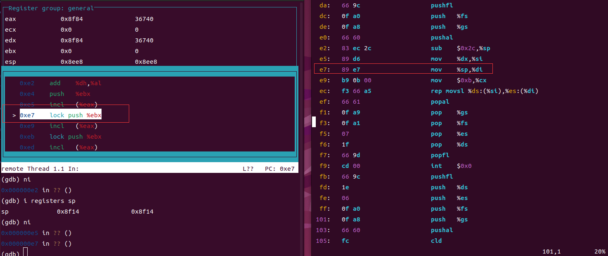
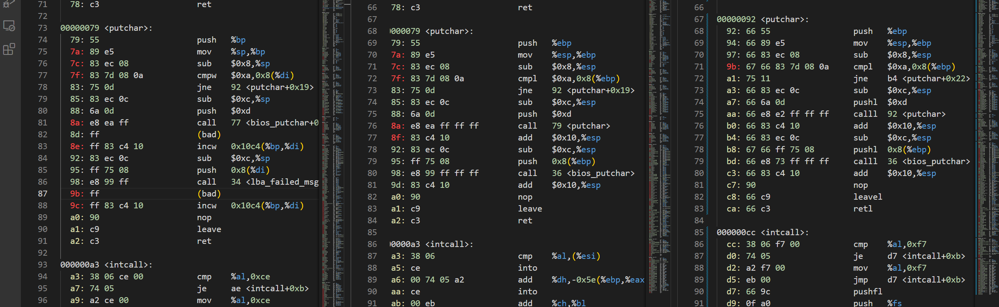

背景
最近这段时间在研究操作系统的启动，写了一些自己的代码（参考的Linux以及Grub），但是在写 16 汇编代码的时候出现了一些问题，从汇编代码 call c语言代码总是会出错。因此就花了一些时间 debug，debug 过程中发现了一些有意思的东西，因此在这里将整个分析和debug过程记录一下，方便自己和有需要的人查阅。
可能是因为大学教材的原因，目前 16 位编程的中文的资料大多都是基于 intel 语法 + nasm 工具。但是从现有的开源项目来看，不论是 Grub 还是 Linux 采用的都是使用 GNU AS，使用的是 AT&T语法 + GNU AS 汇编，使用 GNU AS 的优点就是能使用内联汇编以及 GCC 提供的功能(include头文件、条件编译ifdef等)和 c 语言混合编程。因此本文使用 GCC 工具链（gcc、objcopy、objdump等），以实模式下 Linux 代码为例，分析在 16 位环境下如何实现 c 和汇编的混合编程。
正文
调试过程中我使用的是 GDB ，但是 GDB 调试 16 位汇编非常的痛苦，不仅看不到 16 位的代码，而且在段寄存器不为 0 的时候无法下断点。所以我使用的方法是先 objdump 反汇编，然后在 GDB 中单步执行，对照着反汇编的代码debug。
objdump -d -m i8086 setup.elf >> setup.asm

如果出现了地址不一样的地方那就是出现了错误。
回到话题，我们的问题是在 16 位下使用 c 语言编程。我们把这个问题划分为三个子问题：
如何生成 16 位的程序？
汇编如何调用 c 函数？
c 如何调用汇编代码？
如何编译 16 位的 c 程序
c 程序实际上是没有位数之别的，这个问题应该被描述为如何让 gcc 生成 16 位下可以运行的代码。我们知道编译 64 位或者 32 位可执行程序非常简单。
1 | # 64 位程序 |
上面两行大家或多或少都用过，链接 32 位程序失败的朋友请先安装 gcc-multilib，目前的 64 位 Ubuntu 发行版已经默认不带 32 位的动态库了，所以会报链接错误。
那么如何编译 16 位程序呢，有这个问题的应该比较少见，网上找到的资料也比较少。实际上这个问题很简单，既然-m32是生成 32 位代码，那么-m16 就是告诉 gcc 生成 16 位的代码。下面是 Linux 内核代码中的部分注释。
1 | # How to compile the 16-bit code. Note we always compile for -march=i386; |
需要注意的是 gcc 虽然支持 -m16 选项，但是并不意味着可以编译出 16 位的可执行程序。可执行程序需要经过编译、链接才能直接执行，而操作系统中是没有 16 位链接库的，这意味着我们需要自己手动链接并且指定一个入口。
上面的注释中提到了 -m16 选项只在 4.9 版本以上的 gcc 才能使用，低于这个版本的需要 include an *assembly* header，实际上这个宏的内容是.code16gcc，相关资料可以参考使用 GCC 和 GNU Binutils 编写能在 x86 实模式运行的 16 位代码，GNU AS汇编的 .S 文件可以使用 .code16 来告诉 gcc 生成 16 位代码，.code16gcc就是在 c 语言下使用的宏，作用是类似的，.code16gcc在任意版本的 gcc 都是受支持的。
1 | __asm__(".code16gcc"); |
-m16 为什么 work，它有什么影响？
先上图，这里有三份反汇编出来的代码，下面是生成源文件和反汇编的指令。
1 | # 左边 |

上面给出了三个对照，对应的是同一个c代码在不同情况下编译和执行的过程。
左边是使用 -m32 选项编译，使用-m i8086 反汇编，对应在16位模式下的执行。可以看出来程序的中间直接成了 bad 指令，直接执行肯定会出错。
中间的使用 -m32 选项编译，反汇编成 32 位代码的情况，可以看到正常的程序流，这是代码在32位环境下正常执行的情况。
右边使用 -m16 选项编译，使用 -m i8086 反汇编，对应在16位模式下的执行。反汇编出来的程序流是正常的，和中间的基本相同，只是所有的 call、levae、ret 都变成了calll、leavel、retl，部分的 push 指令变成了 pushl。从二进制码来看，几乎所有的指令前面都多出来了66或者67，其余的二进制码和 32 位下的保持相同（除了地址会有变动）。总结一下就是，gcc 仍然生成 32 位的指令，但是 -m16 选项会让 gcc 在指令前插入一个字节告诉 16 位下的 cpu，该指令的操作数为 4 字节。
反过来看为什么左边的代码在 16 位下不可执行呢？很简单，以 call 指令为例，在 16 位下其操作数为 2 字节，而编译出来的代码操作数是4字节，所以多出来的 2 个字节就会被cpu当成一条指令执行，从而导致之后的指令流出错。
从 16 位汇编跳转到 c 函数
从汇编跳转到 c 执行的方式有两种，一种是 call，另一个是jmp。我们分别讨论这两种情况
jmp
考虑到 16 位的运行环境， jmp 也分为两种情况，一种是段内跳转，另外一个是段间跳转。分别对应 jmp 和 ljmp。
对于段内的运行的c函数直接
1 | jmp function_name |
段间跳转
1 | ljmp $seg, function_name |
call
call 指令和 jmp 的不同之处在于 call 模拟的是函数调用，既然是函数调用那么就应该会返回，而 jmp 不考虑返回的问题。
initcall 函数分析
BIOS 中断是 16 位下编程经常使用到的，例如读磁盘 int 0x13、打印字符串 int 0x10 等等。BIOS 在初始化完成后会在物理地址 0 的地方放置一张中断向量表，指向了一系列非常有用的函数。BIOS 调用只能发生在 16 位环境下，因此在进入保护模式之前我们需要尽可能多的收集 BIOS 信息，传递给操作系统。
既然我们的目标是使用 c 语言编程，那么 BIOS 中断也需要做一层封装，这个封装是比较困难的，BIOS 的各个中断使用到的寄存器都不尽相同，想要适用所有的 BIOS 中断，只能把寄存器和中断号作为参数，
压栈和出栈看操作数类型，
Pop a Value from the Stack
1 |
|
int 中断
（1）标志寄存器入栈
（2）CS:EIP 寄存器入栈，
（3）通过中断号在中断描述符表中找到对应的描述符，并将对应的数据放入CS:EIP中、